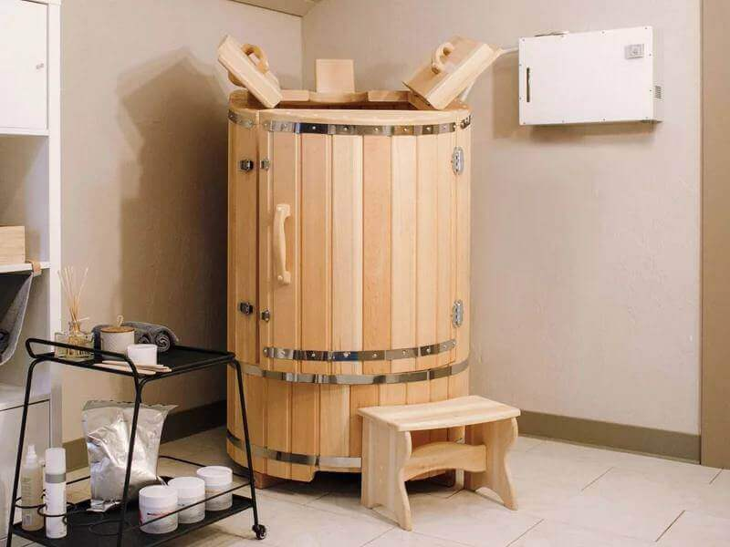

Мы занимаемся производством фитобочек из натурального горно-алтайского кедра с 2002 года. За эти годы мы разработали технологии и создали уникальное производство, позволяющее изготавливать качественные бани-бочки
ЧТО ТАКОЕ ФИТОБОЧКИ?
В современном мире огромное количество людей предпочитают проживать в небольших городских квартирах, зачастую не имея возможности наслаждаться банными процедурами, посещать традиционные бани или сауны. Кедровая фитобочка в данной ситуации является лучшим решением. Бочка не только позволяет получить наслаждение от банных процедур, но и в некоторых моментах фитобочка выигрышней традиционной бани или сауны.
Принцип работы:
Классическая фитобочка представляет из себя бочку цилиндрической формы в которую может поместиться взрослый человек а возможно даже два, для осуществления банных процедур. Тело человека в момент банного отдыха находится в бочке, но голова остаётся снаружи, тем самым не лишая его свежего воздуха, что действительно выигрышно отличает фитобочку от обычной парилки. Фитобочка работает от нагревательной установки (парогенератора). Пар подаётся внутрь фитобочки с помощью парогенератора. В конструкции предусмотрен слив для удаления воды и термостойкий паропровод, имеющий штуцер для соединения с парогенератором. Небольшие габариты кабины обеспечивают атмосферу с плотной насыщенностью паром и, как следствие, более глубокое прогревание тела. За счет этого поры кожи интенсивно открываются и очищаются, одновременно впитывая целебные вещества, входящие в состав фитосборов и эфирных масел. Температура внутри бочки достигает в среднем 45-50 градусов, что позволяет телу эффективно прогреться, коже очиститься и получить все целебные свойства бочки, при этом не перегревая организм.
Лечебные свойства фитобочек:
Фитобочка является не только источником для получения удовольствия, но и здравницей, способной улучшить ваше здоровье. Фитобочка полезнее, чем классическая баня или сауна. Она не производит сильной нагрузки на сердце, оказывает деликатное лечебное воздействие.
Общие полезные свойства: приходит в норму артериальное давление; улучшается кровообращение; предотвращается венозный застой; уходит лишний вес; ускоряется обмен веществ; повышается иммунитет; стимулируется кровоток в малом тазу, что благотворно сказывается на здоровье; нормализуется гормональный фон. Фитобочка так же может быть рекомендована при таких заболеваниях как аритмия, тахикардия, брадикардия, гипертония и гипотония, облитерирующий эндартериит, атеросклероз, а также улучшают общее состояние пациентов, перенесших инфаркт и инсульт (не ранее шести месяцев после приступов). С ее помощью лечат остеохондрозы, артриты, радикулиты, артрозы, а также межпозвонковые грыжи.Такие заболевания как псориаз и нейродермиты (нередко в запущенных случаях) также с успехом лечатся с помощью процедур в кедровой бочке. Благодаря ее положительному воздействию очищаются кожные покровы, осуществляется обеззараживание и заживление поверхности кожи. Фитобочка может быть отличным средством для лечения паталогии почек. Вместе с потом очищается кожа, отторгаются ороговевшие клетки. Такие процедуры рекомендуются людям с угревой сыпью. При регулярном проведении процедур она эффективно очищает организм от скопившихся токсинов и шлаков.
Противопоказания:
Онкологические заболевания Кровотечения и слабое кровообращение в организме Туберкулезные заболевания Цирроз печени Тромбофлебит глубоких вен Мерцательная аритмия Мокнущая экзема Сердечно-сосудистые заболевания 2—3 степени Острые сердечно-сосудистые заболевания Эпилепсия Бронхиальная астма Острые нарушения кровообращения Артрит в фазе обострения Резко выраженный атеросклероз Нарушения в работе щитовидной железы Глаукома прогрессирующая Также имеются противопоказания детям и беременным женщинам.
Уход за фитобочками:
Фитобочка не должна быть герметичной, между дверцами и стенками есть щели, через которые допускается выход пара. На эффективность нагрева и проведение процедуры это влияния не оказывает. В связи с тем, что дерево под воздействием тепла и влаги расширяется и конструкция деформируется, в процессе эксплуатации в досках могут образоваться небольшие трещины. Это естественный процесс для любых фитобочек. На появление деформаций влияет множество факторов: Ежедневная нагрузка (количество процедур), влажность и температура в помещении и даже химический состав воды, подающейся в виде пара в бочку. Не рекомендуется проводить более 15 процедур в день для профессиональной модели и более 5 процедур в день для классической модели. Не стоит использовать бочку в течение 3 часов и более без перерыва. При нерегулярном использовании необходимо прогревать изделие по 10-15 минут в день для того, чтобы избежать рассыхания древесины и появления щелей. Требуется дополнительная обработка парогенератора, способная защитить его от накипи (проводится с использованием специальных средств, исходя из расчета 1 раз на 100 часов работы). Рекомендуется установка фильтров, которые очистят воду от хлора (в противном случае есть риск потемнения древесины). Хранить бочку необходимо в закрытом помещении (не оставлять двери в распахнутом «проветриваемом» состоянии) при температуре от +5 до +30 градусов и относительной влажности не более 80%. Также не стоит оставлять дверцы или крышку открытыми. Если вы не планируете использовать бочку в ближайшее время, лучше прикрыть ее материей или плотной тканью и поставить внутрь небольшую емкость с водой (для поддержания оптимального уровня влажности). Это позволит защитить конструкцию от внешних факторов и продлить ей «жизнь». Для сохранения эстетического вида можно 1 раз в 2 года проводить шлифовку сиденья, подлокотников, трапика и внутренней поверхности. После каждой процедуры необходимо протереть внутреннюю поверхность бочки тряпочкой, особенно уделить внимание углам и поверхности дна бочки. Подержать фитосауну открытой хотя бы 5 минут для проветривания. По окончанию всех процедур за день необходимо достать из фитобочки решетку для ног и сиденье и полностью протереть бочку. Бочку оставить полностью открытой на 10 минут для того, чтобы древесина просохла, далее поместить внутрь УФ-лампу на 10 минут или протереть дезинфицирующим средством. Самым доступным дезинфицирующим средством для бочки из кедра является обыкновенная перекись водорода. Можно промыть мыльным или горчичным раствором, можно использовать ручные щетки с щетиной средней жесткости. Запрещено использование химических средств. После проведения всех этих процедур бочку необходимо закрыть на ночь.
Здоровье и Красота
Эффективное оздоровление организма, поддержание иммунитета
Релаксация
Получение удовольствия и уникальных ощущений от банной процедуры
Здоровье и Красота
Эффективное оздоровление организма, поддержание иммунитета
Релаксация
Получение удовольствия и уникальных ощущений от банной процедуры
Наши преимущества
- Скидки и акции
- Своё производство в РФ
- Гарантия
- Товары в наличии и под заказ
- Фиксированно низкие цены, ниже чем у конкурентов
- Доставка по России и СНГ
- Широкий ассортимент
ПОДБЕРИТЕ ИДЕАЛЬНУЮ ФИТОБОЧКУ ДЛЯ СЕБЯ
В каталогОПЛАТА
У нас действует безналичная оплата для физических и юридических лиц. Вы можете оплатить товар, связавшись с нами по номеру, указанному на сайте.
ДОСТАВКА
Доставка осуществляется во все регионы Российской Федерации и в большинство регионов СНГ любой транспортной компанией по вашему выбору: (СДЭК, Деловые линии, КИТ и другие). Для получения более подробной информации обратитесь к нам.
ГАРАНТИИ
Гарантия действует в течении 6 месяцев на все фитобочки.